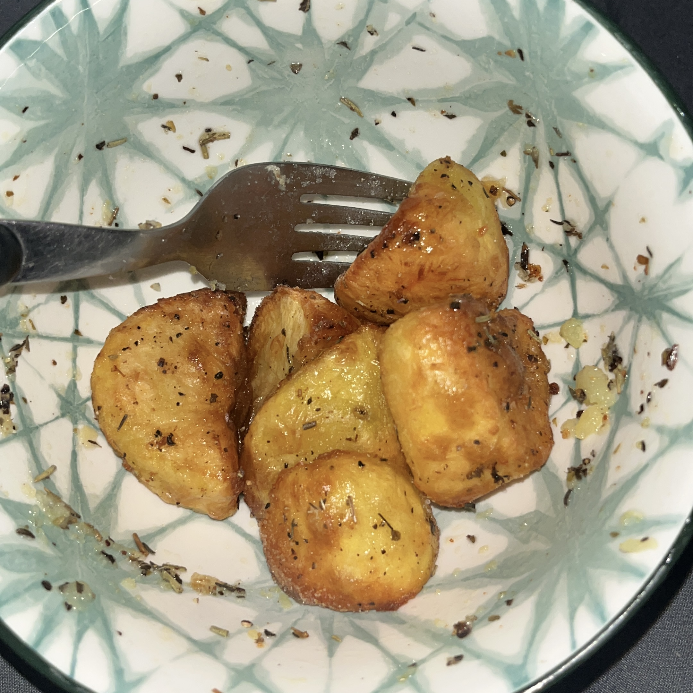

Home
Air Fryer Roast Potatoes

Description
Crispy on the outside and fluffy on the inside. Perfect for your
roast dinners.
Ingredients
- Potatoes
- Duck fat
- Salt
- Pepper
- Olive oil
- Italian seasoning
- Other seasoning (to taste)
Steps
-
Chop your potatoes into evenly sized cubes. Make sure that they
are not too small.
-
Add your chopped potatoes into a pot of cold, salted water, and
boil on a high heat. If you boil the water first, the outside of
your potatoes will cook faster than the inside, resulting in an
undesirable texture.
-
When the water starts to boil, lower the heat slightly and leave
to simmer for around 8 minutes.
-
We want our potatoes to be fork tender. Check on them at the 6,
8 and 10 minute mark just to be sure.
- Drain your potatoes into a metal colander.
-
Place your potatoes into a container along with salt, pepper and
a little bit of olive oil.
-
Put a lid on your container, and shake your potatoes for 15-20
seconds. This will create rough edges, resulting in more crispy
potatoes.
-
Leave your potatoes covered for 5 minutes, allowing the steam to
continue cooking them.
-
Air Fry your potatoes at 200 degrees celcius for 10 minutes.
-
Coat your potatoes in italian seasoning and a little bit of duck
fat.
-
Air Fry for a further 4-10 minutes, depending on your
preference.